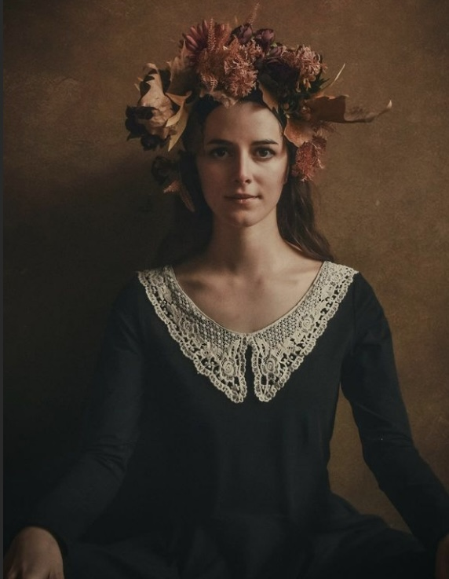
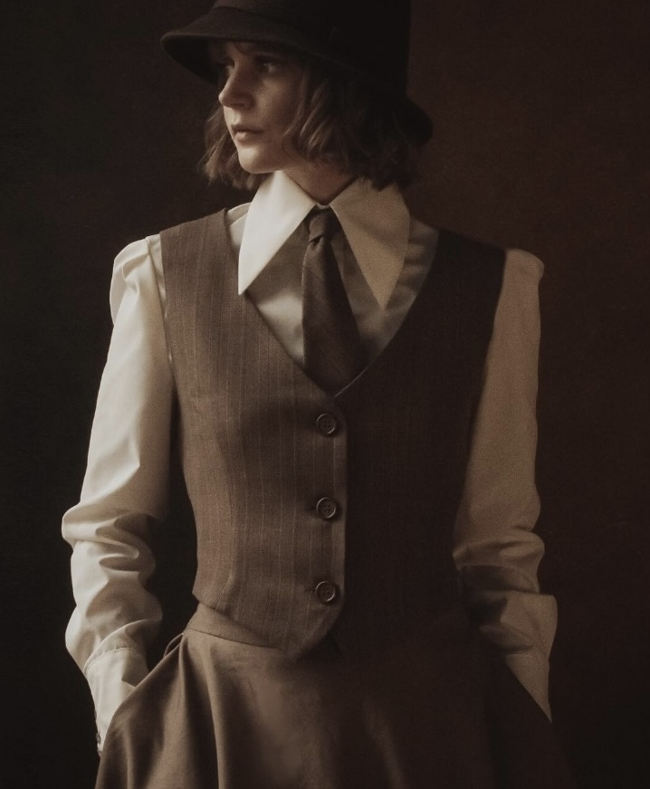
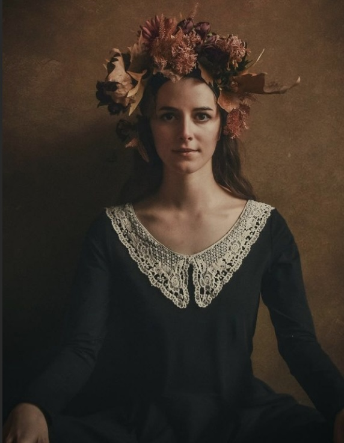
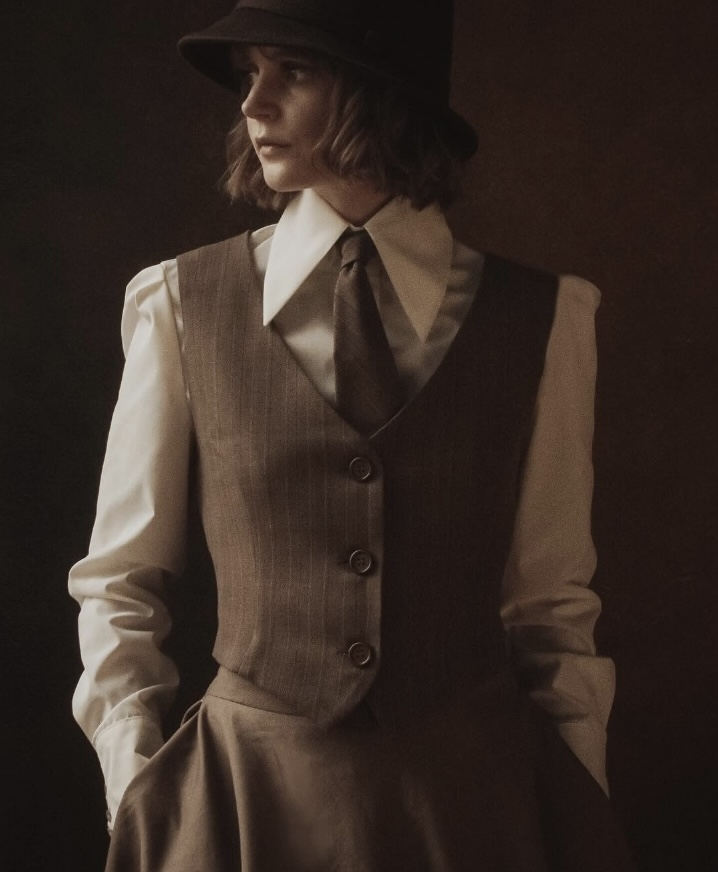
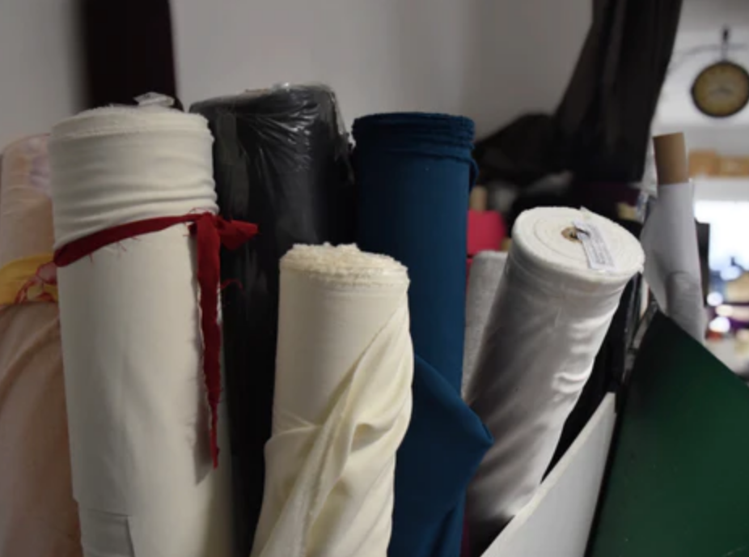
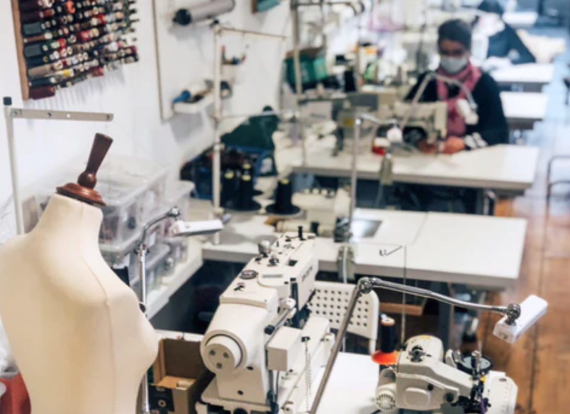
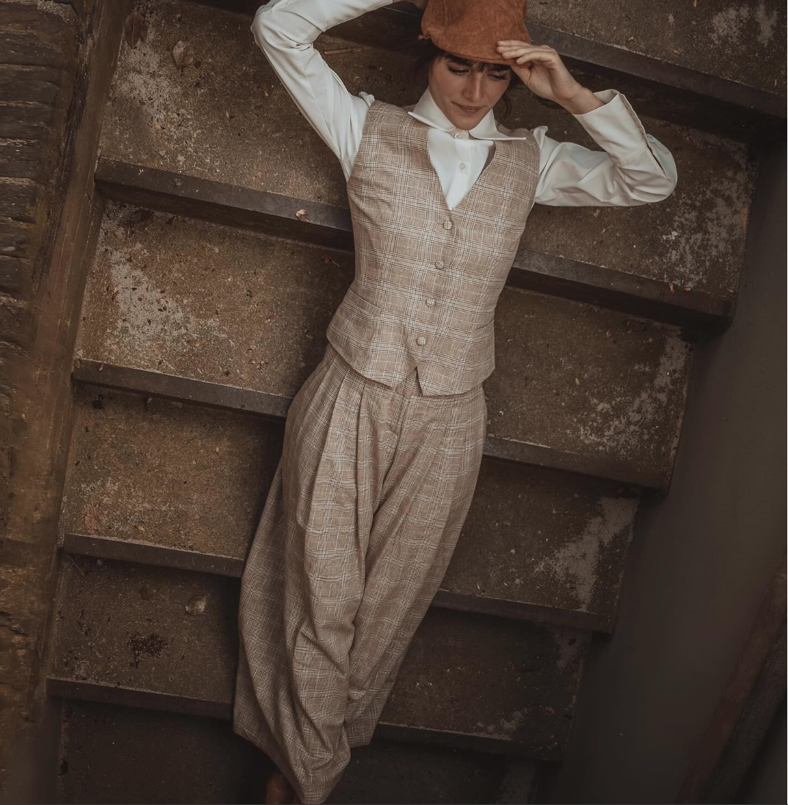

The story of Femkit began with the search for a simple, classic dress that flatters the figure and is affordable at the same time.The designs breathe the air of yesterday and touch the present.
 Femkit is a Berlin-based slowfashion brand that deliberately avoids in-house fabric production and instead relies on German and European stock.
